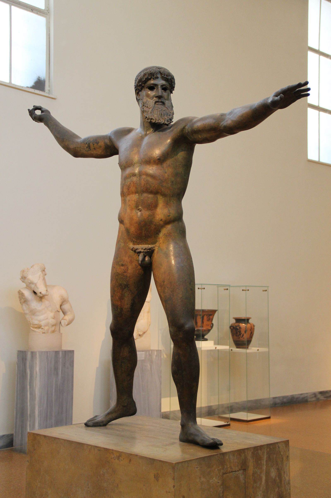

God of the Sea, Earth-Shaker, Lord of Horses

The Artemision Bronze (Zeus or Poseidon), c. 460 BC — National Archaeological Museum, Athens
Poseidon is the god of the sea, of earthquakes, and of horses: three domains that share nothing except instability. Second son of Cronus and Rhea, younger than Hades and elder to Zeus, he drew the sea by lot when the three brothers divided the cosmos after the Titanomachy, and the lot suited him: the sea is beautiful, useful and murderous, often within the same hour. His most telling epithet, Ennosigaios, Earth-shaker, names a power no other Olympian holds outright: he moves the ground itself, and the horse, his other great sign, is essentially the earthquake given a body, barely governed force liable to sudden violence. His temper is elemental and famous even among gods: it flares fast and settles slowly, and a grudge earned against Poseidon (ask Odysseus, ask Troy) tends to outlast the man who earned it. He is, in the end, the god of what cannot be built on: the harbour wall a wave takes down, the fault line under the palace, the strait no oarsman crosses twice with the same confidence. Sailors prayed to him precisely because he was the one force at sea indifferent to their prayers.
The MythsHerodotus (8.55) records the two tokens still visible on the Athenian Acropolis in his own day: a salt spring and a sacred olive tree, relics of the divine contest that named the city. Apollodorus tells the fuller story. Poseidon arrived first, struck the rock with his trident, and brought forth a spring, though the water ran salt, a gift with the shape of generosity and none of the use. Athena planted an olive tree beside it. The judges (Cecrops, the earth-born first king of Attica, in most versions, or the twelve gods in others) found for Athena: an olive tree feeds, burns and builds, a salt spring merely impresses. Poseidon's response was characteristic of the god rather than of a good loser: he flooded the Thriasian plain in fury, a reminder that came before every later reconciliation. The two continued to share cult on the Acropolis regardless, at the Erechtheion, where Poseidon's salt "sea" and Athena's olive stood within a few paces of each other, evidence that the Athenians made peace with their gods' quarrel even where the gods themselves barely did.
In the Iliad (21.441–460), Poseidon reminds Apollo, mid-battle, of a shared humiliation. Sentenced by Zeus to a year's servitude among mortals (punishment, in one tradition, for a conspiracy against him), the two gods built the great walls of Troy for King Laomedon, labour and craft freely given. Laomedon refused their wages and threatened, according to Poseidon's own bitter account, to bind them and sell them as slaves, cutting off their ears for good measure. Poseidon's revenge was a sea monster loosed on the Trojan coast, appeased for a time only by the sacrifice of virgins, a torment ended when Heracles killed the beast and rescued the king's daughter Hesione, and betrayed by Laomedon yet again over the promised payment. The grudge outlived the king by a generation: it is a large part of why Poseidon, builder of Troy's own walls, fights so hard for the Greeks in the war that finally brings those walls down.
The Odyssey (Book 9) gives Poseidon a very personal reason to hate Odysseus: the Cyclops Polyphemus, blinded and humiliated in his own cave, is Poseidon's son by the sea nymph Thoosa. Polyphemus's prayer to his father, that Odysseus never reach home, or reach it late, alone, brokenhearted and to ruin, is the engine of the entire poem's ten-year delay. Poseidon cannot override the fate that guarantees Odysseus's eventual return (the other gods hold that line, and he is at a feast among the Ethiopians when Odysseus's raft first sails, per Book 5), but within that limit he does everything in his power: the storm that wrecks the raft, the long detours, the constant reminder that a god's patience for revenge outlasts any mortal's voyage.
Pausanias (8.25) preserves the Arcadian version of a story the more prudish sources soften. Pursued by Poseidon while she searched grief-stricken for Persephone, Demeter transformed herself into a mare and hid among the horse herds of Onkios at Thelpusa. Poseidon was not deceived: he became a stallion and took her by force. Demeter's rage at the assault earned her, at Thelpusa, the local title Demeter Erinys, the avenging. The union produced the divine horse Arion, swift and half-immortal, and a daughter whose true name Pausanias declines to write, calling her only Despoina, the mistress, an unspeakable name reserved for initiates of her cult at Lycosura. The episode sits oddly beside Poseidon's grander stories precisely because it does not flatter him, and the Arcadians preserved it anyway.
Apollodorus tells how Minos, contesting the throne of Crete against his brothers, prayed to Poseidon for a sign: let a bull emerge from the sea, he vowed, and he would sacrifice it back to the god who sent it. Poseidon obliged with a bull of such surpassing beauty that Minos, having won his kingdom on the strength of the miracle, could not bring himself to kill it, substituting an inferior animal on the altar and keeping the god's own gift for his herds. Poseidon's punishment was exact and pitiless: he made Minos's queen Pasiphae consumed with desire for the very bull her husband had refused to give up. Her union with it, achieved through Daedalus's hollow wooden cow, produced the Minotaur, the bull-headed horror later housed in the Labyrinth. A broken bargain with Poseidon, the myth insists twice over in one generation (his own, in the Troy story), never resolves quietly.
Epithets and DomainsHis standard Homeric epithet, often paired with Gaieochos in the same line. Names the power unique to him among the Olympians: he moves the ground itself.
Another core Homeric title, describing the sea as the element that encircles and supports the land. Frequently joined with Ennosigaios in Homer's formulaic verse.
The god as creator and patron of the horse, tying his two most violent domains, earthquake and stallion, into a single cult identity. Widely attested across Greece, notably at Athens and in Arcadia.
Invoked as protector against earthquakes rather than their cause, a propitiatory reversal of his own destructive power. Attested in cult at Sparta and elsewhere.
The deep-water aspect, distinct from his roles over harbours, earthquakes and horses: the god of the sea considered simply as the sea.
Lord of the Isthmus of Corinth, where the Isthmian Games were held in his honour every two years, one of the four great Panhellenic festivals.
Named for his cult centre at Helike in Achaea and the associated Ionian federal sanctuary, the Panionion. Helike's later destruction by earthquake and tidal wave was read by the Greeks themselves as the god reclaiming his own city.
In Jungian terms Poseidon rules the psyche's own sea: the realm of emotion and instinct that lies under the daylight kingdom of reason as the ocean lies under the sky. Jean Shinoda Bolen, in Gods in Everyman, reads the division of the cosmos itself as a psychological map: when Zeus took the bright, visible sky, everything he could not or would not feel was relegated to his brother's kingdom, and Poseidon became the god of what consciousness submerged. His three domains say it exactly. The sea is feeling in its vastness; the earthquake is feeling breaking through structure; the horse is instinct with a body, magnificent and barely governed. Where the Zeus pattern asks "what should be done?", the Poseidon pattern asks "what is actually moving down there?", and knows the answer in its body before it has words.
The light expression is depth. Poseidon consciousness feels hugely and truly: its loyalty is oceanic (he avenges his monstrous son as fiercely as any father in myth), its creativity is fertile in the way the sea is fertile, and its emotional honesty can move a room the way weather moves a coastline. It is also, unexpectedly, a builder: the god who raised the walls of Troy with his own hands understands patient craft, and men and women with this pattern often anchor their intensity in making things. Its intuition is tidal rather than analytic, and in any domain where the currents matter more than the charts (a negotiation's undertow, a team's morale, a client's unsaid grief) it reads what the sky god misses.
The shadow is the grudge and the flood. Poseidon loses the contest for Athens fairly and drowns the plain anyway; blinded pride pursues Odysseus for ten years over an injury his own son initiated. In a person, this is affect that will not close its ledger: resentment kept alive and rehearsed, disproportion between slight and response, the emotional flooding that swamps every structure built to contain a disagreement. The myths are also unflinching about force: what Poseidon does to Demeter at Thelpusa and to Medusa is instinct refusing refusal, and the pattern's darkest edge in life is exactly that, desire or anger that treats another person's no as an obstacle. And beneath it all runs the second brother's wound: the elder who drew the lesser lot, whose kingdom is larger than the sky's and less honoured, and who cannot stop measuring. The work of this archetype is containment without suppression: building the harbour wall that holds the sea without pretending the sea is not there.
In Modern LifePoseidon is the most emotionally powerful person in the building, whatever the org chart says. He is the brilliant, moody technical founder whose weather the whole company learns to read; the rainmaker partner whose gut has never been wrong and whose temper has never been cheap; the artist, chef or surgeon whose intensity is the engine of the work and the hazard of the workplace. Where a Zeus leader runs the sky, a Poseidon leader runs the deep: culture, loyalty, morale, the unspoken, and organisations that lose their Poseidons to smoother operators tend to discover, a year later, that something has gone dead in the water.
In coaching, three tells identify the pattern quickly. The ledger: losses and slights recorded years back and still charged with present feeling (the Odysseus decade, in miniature). The flood: conflict in which the person does not argue so much as inundate, volume and history and grievance arriving together, structure washed away. And the brother wound: a chronic, corrosive comparison with some more visible peer, co-founder or sibling whose kingdom looks brighter. The developmental work is rarely about feeling less; that door does not close. It is about infrastructure: naming the tide before it breaks (the earthquake god, given early-warning language, becomes weather rather than catastrophe), formally closing accounts (grudges end by decision, not by time), and claiming the actual sovereignty of the deep realm instead of grieving the sky, since the sea was never the lesser kingdom except in the sky god's accounting.
In relationships the light Poseidon is depth itself: the partner whose feeling can be trusted because it is never performed. The shadow is the partner whose moods are the family's climate, and whose old injuries surface with barometric regularity. The question that turns the pattern is Poseidon's own: whether the force that moves the ground can learn to hold something steady, as Asphaleios, the securer, the epithet by which frightened coastal towns prayed to the earthquake god to keep the earth still, and trusted him to do it.
CorrespondencesNone in the Greek system: the seven classical planets went to other gods. The planet Neptune, discovered in 1846, carries his Roman name by modern astronomical convention, and its astrological use is entirely modern.
Poseideon, the Attic winter month named for him (roughly December–January), when the sea was at its most dangerous and his festivals fell.
Sea green, deep blue, storm grey. Modern convention: no colour is securely attested for him in ancient cult.
The trident, forged by the Cyclopes after the Titanomachy; the wave; the fish and the dolphin of his iconography.
The horse and the bull above all, his two great sacrificial and mythic animals; the dolphin, which in later tradition won Amphitrite for him and was set among the stars in thanks. Black bulls were his portion in Homer: Nestor sacrifices them to him on the beach at Pylos in the Odyssey (Book 3).
The pine, from the victor's crown of his Isthmian Games (Plutarch discusses the crown's history). Beyond the pine, plant lists are modern convention.
Bulls, especially black ones, at the shore (Homeric and standard); wine libations poured into the sea before voyages. Pausanias (8.7.2) records the Argives dropping bridled horses into the spring called Dine as offerings to him, the horse god fed with horses. Modern practice substitutes sea-safe libations, shells and salt water; contemporary convention, sensibly so.
The Isthmian Games at Corinth, held for him every two years, one of the four Panhellenic festivals; the Posidea, held in the month Poseideon and attested at Delos and in Attica.
The Isthmus of Corinth; Cape Sounion, whose marble temple still stands above the Aegean; Onchestos in Boeotia, his grove in the Homeric Hymn to Apollo; the Panionion at Mycale and drowned Helike in Achaea; Kalaureia (modern Poros), seat of an ancient amphictyony of his worshippers.
The eighth of the month is associated with Poseidon in Athenian custom, though the attestation is thinner than for Hermes' fourth; treat with mild confidence.
For divination: Delphi did not always belong to Apollo. Pausanias (10.5.6) preserves the tradition that the oracle was held in its oldest days by Gaia jointly with Poseidon, and that Apollo later acquired Poseidon's share, giving him the island of Kalaureia in exchange. Read psychologically, the lineage is exact: prophecy begins with the earth and the deep, the chthonic and oceanic sources, and only later acquires Apollo's daylight clarity. A divination practice that feels stuck in the head can take the hint and go back down the family tree.
Amphitrite, the Nereid, his queen of the sea. Among many other unions: Demeter (as the mare of Thelpusa), Medusa, and Tyro, the mortal princess he visited disguised as the river god Enipeus
Triton, by Amphitrite. Theseus, in the Troezen tradition that makes Poseidon his true father alongside Aegeus. Polyphemus, by the nymph Thoosa. The horse Arion, by Demeter. Pegasus and Chrysaor, born from Medusa's body at her death
Athena, defeated for the naming of Athens. Odysseus, tormented across a decade for the blinding of Polyphemus. The Trojans collectively, for Laomedon's broken word. And, quietly, permanently, Zeus: the elder brother who drew the lesser lot and never once stopped being second in a house he helped to build
Poseidon was freed from Cronus's stomach alongside his siblings, fought through the Titanomachy, and received the trident forged for him by the freed Cyclopes as his portion of the victory: the weapon that names him as surely as the thunderbolt names his brother.